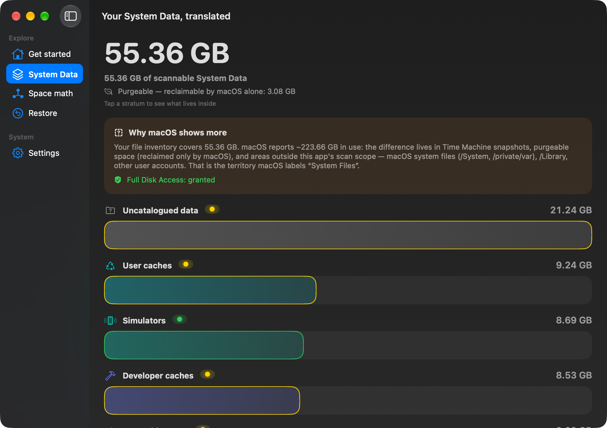
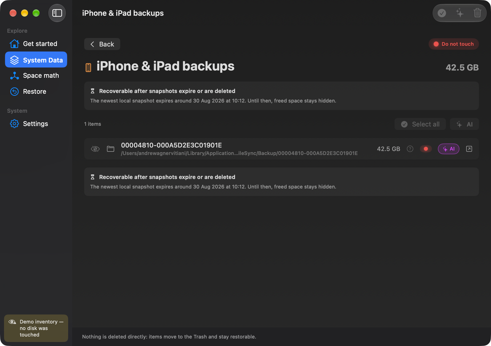

macOS ti dice solo “Dati di sistema: 40 GB”. Clean system data ti mostra cosa c'è davvero, voce per voce — con un semaforo deterministico che ti dice cosa puoi cestinare in tranquillità, e un'AI che ti spiega ogni voce nella tua lingua.

La Stratigrafia — i tuoi dati di sistema come un carotaggio geologico. Ogni strato è una categoria, ogni colore un verdetto.
Ogni voce ha un semaforo deciso da regole deterministiche — non da un'AI che “pensa”.
Niente viene cancellato direttamente: tutto va nel Cestino, con il Rimetti a posto garantito dal nostro manifest — quello di macOS è notoriamente inaffidabile.
Un tasto AI su ogni voce spiega cos'è e perché ha quel colore — in italiano semplice, con fonti, costi e tempi in chiaro.
Un inventario di cache, log, snapshot, build di sviluppo e backup — ogni strato pesato sul posto, poi colorato per verdetto. Questa è una scansione vera, dall'inventario demo dell'app.
Inventario di cache, log, snapshot, build di sviluppo, backup e altro — misurato sul tuo disco, non stimato.
Ogni voce ha un semaforo deciso da regole deterministiche e una spiegazione chiara nella tua lingua, voce per voce. Opzionale: analisi AI.
Niente viene cancellato direttamente: tutto va nel Cestino con Annulla sempre disponibile, via manifest interno.

Ogni voce ha il suo verdetto e il suo tasto AI. Il rosso non si può cestinare — e nulla viene mai cancellato direttamente.
Un tasto AI su ogni voce ti racconta cosa contiene quella cartella e perché ha quel semaforo — in italiano semplice, con costo e durata in vista. Una regola assoluta: il semaforo lo mettono le regole, e l'AI non può cambiarlo mai.
Questa cartella è il “ripostiglio” del browser: ci conserva copie delle pagine che hai visitato per riaprirle più in fretta. Si ricrea da sola ogni volta che serve, quindi svuotarla non ti fa perdere nulla di importante — recuperi solo spazio.
Con una richiesta di ricerca l'AI consulta fonti reali e te le cita — perfetta per le voci sconosciute.
Spiegazioni in italiano, inglese o spagnolo, sempre coerenti con il semaforo della voce.
Con la licenza: nessuna chiave da configurare. Poi puoi continuare con la tua chiave API (BYOK).
L'analisi batch esamina tutta la selezione in una volta — 9 voci in circa 30 secondi.
Il verdetto non è un'intelligenza artificiale che “pensa”: è un insieme di regole deterministiche e trasparenti — verificate voce per voce sulla tua versione di macOS.
Cache e log che si rigenerano da soli. Verificati voce per voce sulla tua versione di macOS.
Utile ma delicato: l'app ti guida passo-passo invece di cancellare alla cieca.
Snapshot, backup iPhone, volumi di sistema: spiegati per bene e mai proposti per l'eliminazione — rifiutati a livello di codice.
Ti racconta cosa contiene la cartella e perché ha quel colore, nella tua lingua. Il verdetto resta sempre delle regole.
Nessuna cancellazione diretta: tutto passa dal Cestino, con il Rimetti a posto garantito dal nostro manifest.
Un manifest interno di undo: ripristino nella posizione originale anche dopo aver svuotato, con gestione delle collisioni.
Niente telemetria, niente analytics, niente upload. L'AI opzionale riceve solo nome e percorso della voce — mai il contenuto dei file.
Perché un disco “512 GB” ne mostra 494, cos'è lo spazio eliminabile, quanto è davvero libero: spiegato senza gergo.
Interfaccia, spiegazioni e knowledge base interamente in italiano, inglese e spagnolo — analisi AI incluse.
Include 400 analisi AI. Riprenditi il tuo disco — e capisci finalmente cosa c'era dentro.